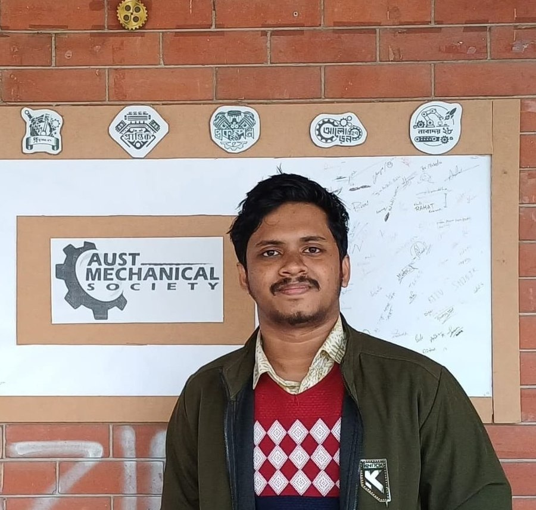

Simulating matter at the atomic scale — molecular dynamics, machine learning, and the physics that connects them.

I'm a Mechanical Engineering undergraduate working at the intersection of molecular dynamics, computational modeling, and machine learning. My research explores how atomic-scale simulation and data-driven methods can accelerate materials discovery and thermal-system design — from gold nanowires to HVAC cooling elements.
I'm a student researcher at the Applied Simulation and Modeling Lab and a member of the Mechanical Society. Outside the lab, I write about where physics, simulation, and AI meet — and build small tools that make computational research easier to start.
Technical report developed for Communication Seminar, incorporating NPT 2 (SDG 1): reducing the proportion of the population living below the national poverty line to below 10 percent.
Design project focused on the structural design and fatigue analysis of a 2.5 kg UAV landing mechanism.
Assistive mobility project leveraging speech recognition and microcontroller systems to enable voice-controlled navigation for individuals with restricted physical mobility.
On how quantum mechanics, molecular dynamics, and machine learning are converging — from QM/MM drug discovery to variational quantum eigensolvers for materials.
Once the great American physicist Richard Feynman said, "Nature isn't classical… and if you want to make a simulation of nature, you'd better make it quantum mechanical."
The "Quantum Man" said it right. Quantum mechanics is a huge, versatile scope of applied physics. It can bring together molecular dynamics and AI in a single line as well. Just for an example, in modern drug discovery, Quantum Mechanics (QM) and Molecular Dynamics (MD) combined help the investigator to orchestrate the medicine precisely.
For more accuracy, AI can play a complementary role. Quantum programming ecosystems include IBM's Qiskit, Google's Cirq, and Microsoft's Q#. These tools support experimentation with quantum algorithms and quantum machine learning.
Variational Quantum Eigensolver (VQE) algorithms can be used to estimate molecular ground-state energies. Quantum computing may eventually help accelerate parts of materials discovery by predicting properties and interactions relevant to stability and performance.
From Hideki Yukawa's 1935 meson theory to a modern pair_style in LAMMPS — how the screened Coulomb potential can be used to model plasmas, colloids, and nanoparticles.
Hideki Yukawa's work connected the range of an interaction with the mass of an exchanged particle and led to the theoretical development of the Yukawa potential.
Yukawa's key idea was that the mass of an exchanged particle determines the range of the force. His theoretical work contributed to the prediction of the meson and eventually earned him the 1949 Nobel Prize in Physics.
The Yukawa potential has applications in areas including plasma physics, colloidal suspensions, charged nanoparticles, nuclear physics, and astrophysics.
LAMMPS provides a Yukawa interaction through
pair_style yukawa.
This allows molecular-dynamics simulations involving
screened interactions in appropriate model systems.
An AI research workspace built around OpenMM. Describe a molecular system in plain language, and get a real simulation, trajectory, and analysis back — an agentic interface that lowers the barrier to running molecular dynamics.
Launch Matsonnet Studio ↗Open to research collaborations, internships, and conversations about molecular dynamics, machine learning, and computational modeling.